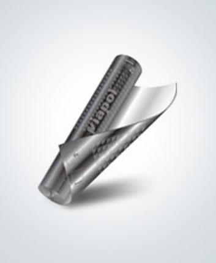
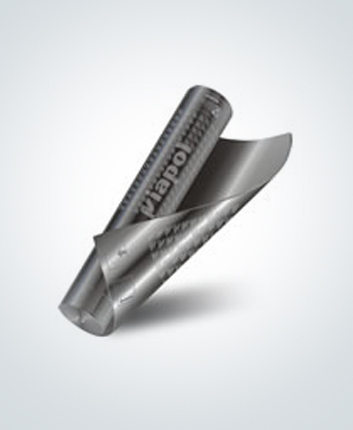

Mantas Asfálticas
Manta asfáltica produzida a partir da modificação física de asfaltos
Aplicar sobre a regularização seca uma demão de primer Viabit, Adeflex ou Ecoprimer, com rolo ou trincha e aguardar a secagem por no mínimo 6 horas;
Alinhar a manta asfáltica Premium Poliéster em função do requadramento da área, procurando iniciar a colagem no sentido dos ralos para as cotas mais elevadas;
Com auxílio da chama do maçarico de gás GLP, proceder a aderência total da manta Premium Poliéster. Nas emendas das mantas deverá haver sobreposição de 10 cm que receberão biselamento para proporcionar perfeita vedação.
Executar as mantas na posição horizontal, subindo 10cm na posição vertical.
Alinhar e aderir à manta na vertical, descendo e sobrepondo em 10cm na manta aderida na horizontal.
A manta deverá ser aderida na vertical 30cm acima do piso acabado.
Após a aplicação da manta asfáltica, fazer o teste de estanqueidade, enchendo os locais impermeabilizados com água, mantendo o nível por no mínimo 72 horas.
Observação: No caso de aplicação com asfalto quente, consultar o site www.viapol.com.br – Ativ Web.
Detalhes do produto
Manta asfáltica produzida a partir da modificação física de asfaltos com polímeros Elastoméricos (EL) ou Plastoméricos (PL). Estruturada com um não-tecido de filamentos contínuos de poliéster, resinado e termofixado. Disponível nas espessuras de 3, 4 e 5 mm.
Utilização:
Premium Poliéster 3 mm - varandas e terraços, lajes maciças de pequenas dimensões, lajes sob telhados, calhas, barriletes, cortinas em contato com o solo (face externa) e no sistema de dupla manta.
Premium Poliéster 4 mm - lajes térreas, lajes de cobertura, play ground’s, vigas calhas, reservatórios elevados, piscinas elevadas e espelhos d'água elevados.
Premium Poliéster 5 mm - lajes pré-moldadas, lajes de estacionamento, helipontos e heliportos.
Outras aplicações consultar o Departamento Técnico da Viapol.
Características Técnicas:
| Características | Unid. | PL | EL |
| Carga máxima ruptura longitudinal (mín.) | N/5cm | 400 | 400 |
| Carga máxima ruptura transversal (mín) | N/5cm | 400 | 400 |
| Alongamento mínimo na longitudinal | % | 30 | 30 |
| Alongamento mínimo na transversal | % | 30 | 30 |
| Absorção d’água (máx) | % | 1,5 | 1,5 |
| Flexibilidade à baixa temperatura | ºC | -5 | -5 |
| Resistência ao impacto | J-Joule | 4,90 | 4,90 |
| Resistência ao puncionamento estático | kg | 25 | 25 |
| Escorrimento ao calor (mín) | ºC | 105 | 95 |
| Estabilidade dimensional (máx) | % | 1 | 1 |
| Flexibilidade após envelhecimento (mín) | ºC | Normalização: |
Atende ao tipo III-B segundo a NBR 9952/2007, norma vigente.
Atende ao tipo III segundo a NBR 9952/98, norma substituída.
Preparação da superfície:
A superfície deverá ser previamente lavada, isenta de pó, areia, resíduos de óleo, graxa, desmoldante, etc.
Sobre a superfície horizontal úmida, executar regularização com caimento mínimo de 1% em direção aos pontos de escoamento de água, preparada com argamassa de cimento e areia média, traço 1:3, utilizando água de amassamento composta de 1 volume de emulsão adesiva Viafix e 2 volumes de água para maior aderência ao substrato. Essa argamassa deverá ter acabamento desempenado, com espessura mínima de 2cm.
Na região dos ralos, deverá ser criado um rebaixo de 1cm de profundidade, com área de 40x40 cm com bordas chanfradas para que haja nivelamento de toda a impermeabilização, após a colocação dos reforços previstos neste local.
Todos os cantos e arestas deverão ser arredondados com raio aproximado de 5cm a 8cm.
Nas áreas verticais em alvenaria, executar chapisco de cimento e areia grossa, traço 1:3, seguido da execução de uma argamassa desempenada, de cimento e areia média, traço 1:4, utilizando água de amassamento composta de 1 volume de emulsão adesiva Viafix e 2 volumes de água.
Nos vãos de entrada das edificações (portas, esquadrias, etc.) a regularização deverá avançar no mínimo 60cm para o seu interior, por baixo de batentes, contra-marcos, etc., respeitando o caimento para as áreas externas; exceto para áreas internas com pisos em madeira ou degradáveis por ação de umidade. Recomenda-se que as áreas externas tenham cota no mínimo 6cm menor que as cotas internas, tanto no nível da impermeabilização como no nível do piso acabado.
Os ralos e demais peças emergentes deverão estar adequadamente fixados de forma a executar os arremates.
Camada Separadora:
Evita que os esforços de dilatação e contração da argamassa de proteção mecânica atuem diretamente sobre a impermeabilização.
Como camada separadora utilizar:
Filme plástico de 24 micra de espessura.
Em estacionamentos, utilizar como camada amortecedora e separadora geotêxtil de gramatura mínima de 400 grs/m2.
Argamassa de Proteção Mecânica :
Horizontal
Executar argamassa de proteção mecânica de cimento e areia traço 1:4, desempenada com espessura mínima de 3cm. Esta argamassa deverá ter juntas perímetrais com 2 cm de largura, preenchidas com argamassa betuminosa, traço 1:8:3 de cimento, areia e emulsão asfáltica Vitkote. Caso a proteção mecânica seja o piso final fazer juntas formando quadros de no máximo 2,0mx2,00m, preenchido com argamassa betuminosa conforme descrito.
Para estacionamentos e rampas, executar o piso previsto que deverá ser dimensionado e estudado de acordo com o projeto e necessidades do local.
Vertical
Sobre a impermeabilização, executar chapisco de cimento e areia, traço 1:3, seguido da execução de uma argamassa desempenada de cimento e areia média, traço 1:4, utilizando água de amassamento composta de 1 volume de emulsão adesiva Viafix e 2 volumes de água. A argamassa deverá ser armada com tela plástica, subindo 10 cm acima da manta asfáltica.
Consumo:
Consumo estimado de 1,15m²/m² de área, considerando sobreposições e perdas por recortes de detalhes.
Acabamento:
PP - Polietileno em ambas as faces, para colagem com maçarico;
AA - Areia em ambas as faces para colagem com asfalto quente;
AP - Areia/polietileno - Polietileno na face de colagem para aplicação com maçarico.
Validade e estocagem:
O produto tem validade de 5 anos, a partir da data de fabricação, desde que armazenado na posição vertical, nas embalagens originais e intactas, em local seco, ventilado e longe de fontes de calor.
Recomendações:
Toda impermeabilização efetuada em ambientes fechados deve ter ventilação forçada, se houver a necessidade de utilização de maçarico na aplicação do sistema impermeabilizante, para maior segurança o botijão de gás deve permanecer fora do ambiente.
Consultar os seguintes catálogos: Viafix, Adeflex, Viabit, Ecoprimer
Nota: As informações contidas nesta ficha são baseadas em nosso conhecimento para a sua ajuda e orientação. Salientamos que o desempenho dos nossos produtos depende das condições de preparo de superfície, aplicação e estocagem, que não estão sob nossos cuidados. O rendimento prático depende da técnica de aplicação, das condições do equipamento e da superfície a ser revestida. Não assumimos assim, qualquer responsabilidade relativa ao rendimento e ao desempenho de qualquer natureza em decorrência do uso indevido do produto. Para maiores esclarecimentos consultar nosso departamento técnico.A Viapol reserva-se o direito de mudar as especificações ou informações contidas neste follheto sem prévio aviso.
Embalagens disponíveis
- Bobina de 1m de largura e 10m de comprimento
- Palete com 30 bobinas de manta 3 mm - 300 m²
- Palete com 25 bobinas de manta 4 mm - 250 m²
- Palete com 20 bobinas de manta 5 mm - 200 m²
- .